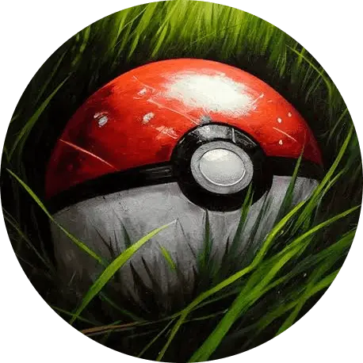

<nav class="side-bar" *ngIf="isSideBarOpen; else showBurgerButton">
  <button
    (click)="closeSideBar()"
    class="side-bar__close-side-bar-button"
    matTooltip="Close SideBar"
    aria-label="Button to close the sidebar menu"
  >
    <svg
      fill="#fff"
      version="1.1"
      xmlns="http://www.w3.org/2000/svg"
      xmlns:xlink="http://www.w3.org/1999/xlink"
      viewBox="0 0 26.676 26.676"
      xml:space="preserve"
    >
      <g>
        <path
          d="M26.105,21.891c-0.229,0-0.439-0.131-0.529-0.346l0,0c-0.066-0.156-1.716-3.857-7.885-4.59
      c-1.285-0.156-2.824-0.236-4.693-0.25v4.613c0,0.213-0.115,0.406-0.304,0.508c-0.188,0.098-0.413,0.084-0.588-0.033L0.254,13.815
      C0.094,13.708,0,13.528,0,13.339c0-0.191,0.094-0.365,0.254-0.477l11.857-7.979c0.175-0.121,0.398-0.129,0.588-0.029
      c0.19,0.102,0.303,0.295,0.303,0.502v4.293c2.578,0.336,13.674,2.33,13.674,11.674c0,0.271-0.191,0.508-0.459,0.562
      C26.18,21.891,26.141,21.891,26.105,21.891z"
        />
        <g></g>
        <g></g>
        <g></g>
        <g></g>
        <g></g>
        <g></g>
        <g></g>
        <g></g>
        <g></g>
        <g></g>
        <g></g>
        <g></g>
        <g></g>
        <g></g>
        <g></g>
      </g>
    </svg>
  </button>

  <header class="side-bar__header">
    <a routerLink="/board" (click)="closeSideBar()">
      

      <h1>PokéBoard</h1>
    </a>
  </header>

  <ul class="side-bar__list">
    <li (click)="closeSideBar()">
      <a routerLink="/board/pokemons">
        Pokémons
        
      </a>
    </li>

    <li (click)="closeSideBar()">
      <a routerLink="/board/favorites">
        Favorites
        <mat-icon
          aria-hidden="false"
          aria-label="E-mail Icon"
          fontIcon="star"
        ></mat-icon>
      </a>
    </li>

    <li (click)="closeSideBar()">
      <a routerLink="/board/my-profile">
        My Profile
        <mat-icon
          aria-hidden="false"
          aria-label="Person Icon"
          fontIcon="person"
        ></mat-icon>
      </a>
    </li>

    <li>
      <a
        href="https://guilhermescr.github.io/modern-pokedex/with-javascript/modern-pokedex"
        target="_blank"
        rel="external"
      >
        Modern Pokédex
        <mat-icon
          aria-hidden="false"
          aria-label="Launch Icon"
          fontIcon="launch"
        ></mat-icon>
      </a>
    </li>

    <li (click)="logout()" tabindex="0">
      <a>
        Log Out
        <mat-icon
          aria-hidden="false"
          aria-label="Logout Icon"
          fontIcon="logout"
        ></mat-icon>
      </a>
    </li>
  </ul>
</nav>

<ng-template #showBurgerButton>
  <button
    (click)="openSideBar()"
    class="open-side-bar-burger-button"
    [class.adjusted-position]="currentRoute === '/board'"
    tabindex="1"
    matTooltip="Open SideBar"
    aria-label="Button to open the sidebar menu"
  >
    <span class="open-side-bar-burger-button__bar"></span>
    <span class="open-side-bar-burger-button__bar"></span>
    <span class="open-side-bar-burger-button__bar"></span>
  </button>
</ng-template>
